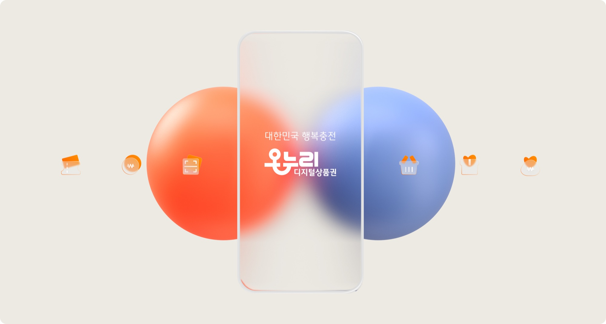
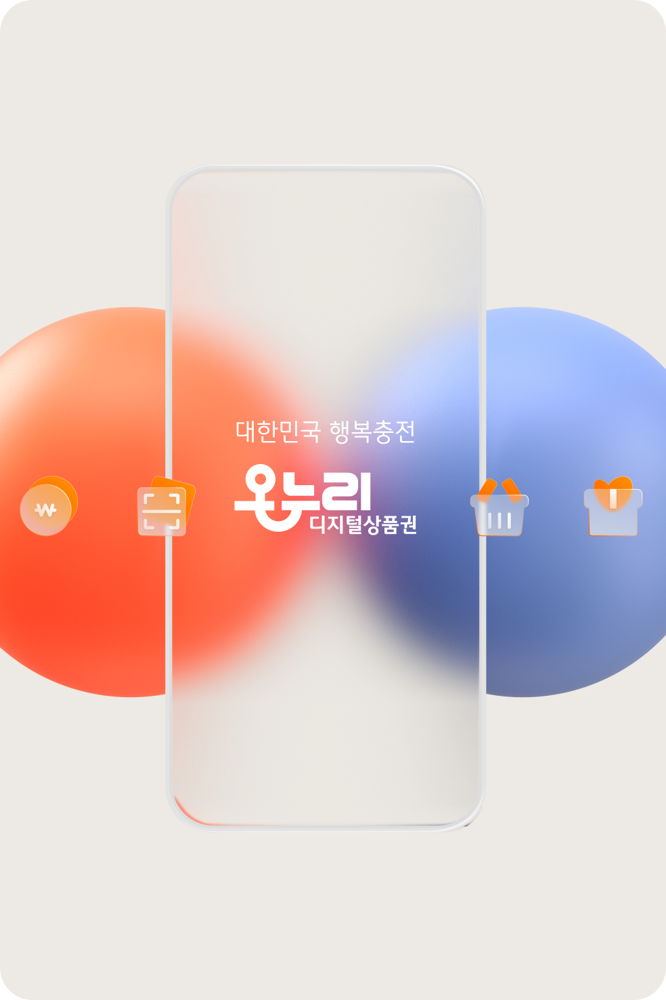
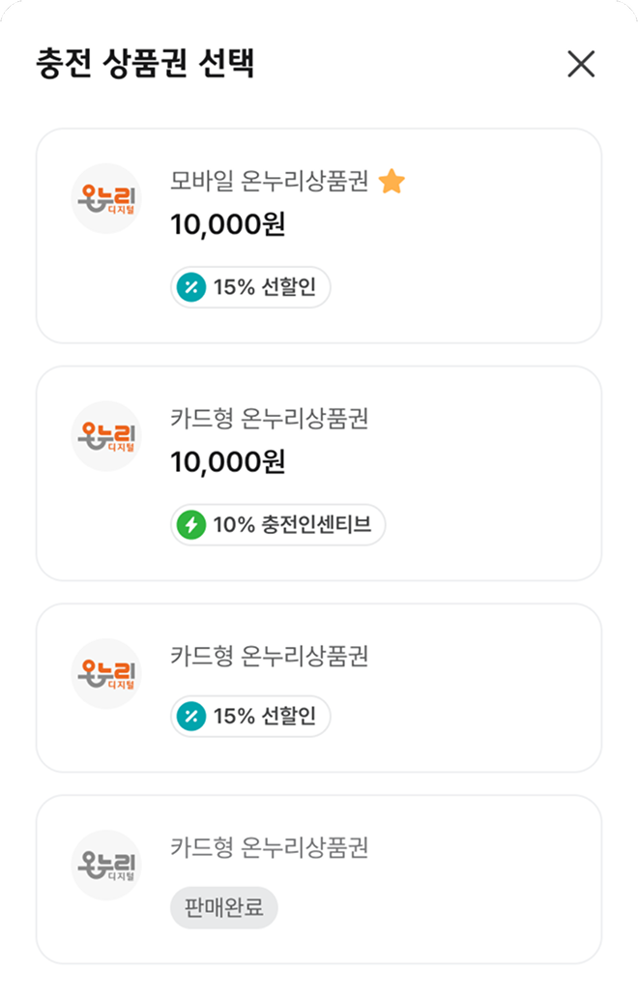
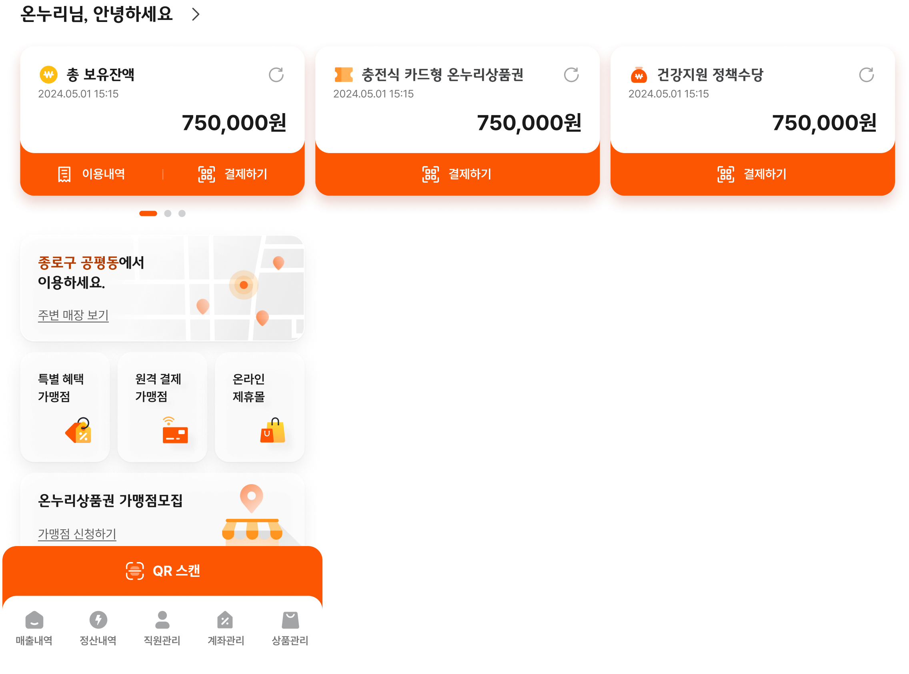
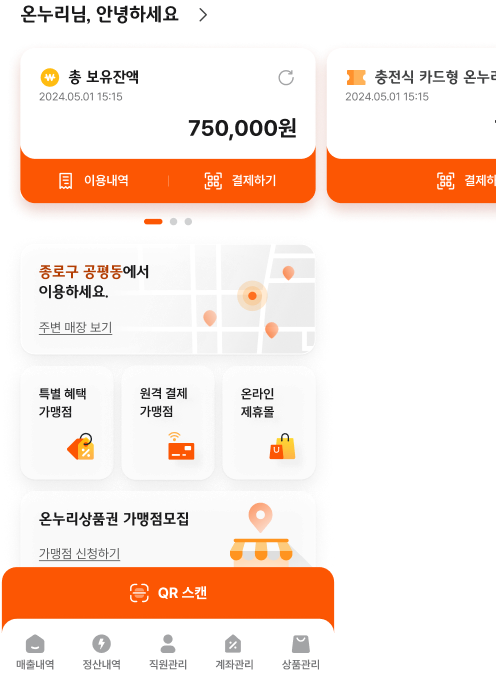
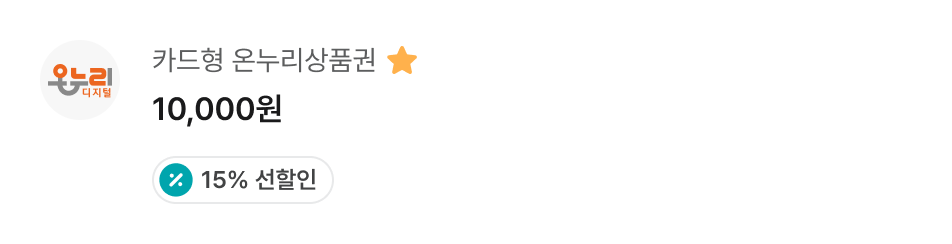
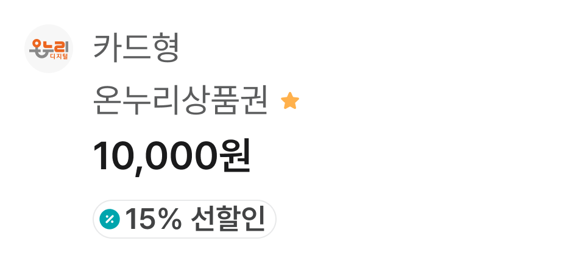
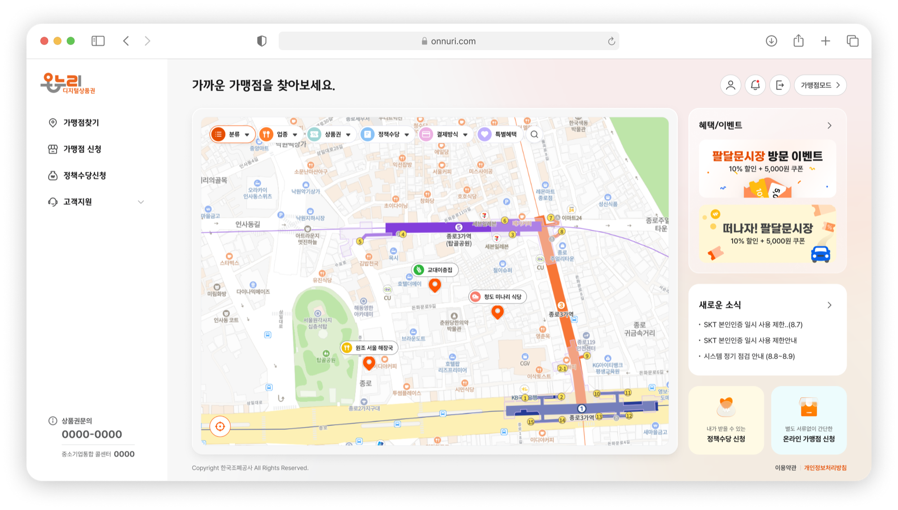
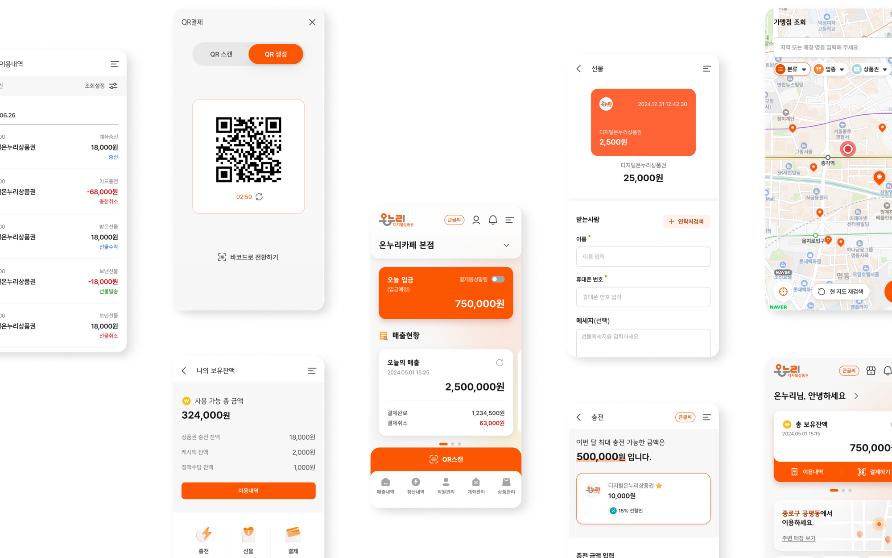
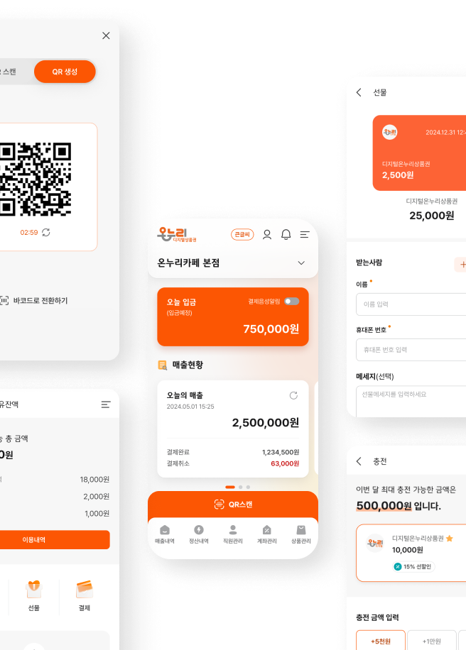

신뢰성, 유용성, 일관성
TRUSTABLE
- 새로운
- 친근한
- 가까운
FRIENDLY
열정적이고
따뜻한
정
밝고 희망찬 미래
희망, 진정성, 신뢰
SEAMLESS
연결, 통합, 확장, 혜택


일반회원, 가맹점회원, 기업구매 회원,제휴사 및 유관기관
전국단위 상품권 및 정책수당 서비스 제공을 위한
차세대 지급결제플랫폼을 구축합니다.
사용자의 이용목적에 맞는 서비스를 제공하며,
Brand Identity에 Trend를 더한
통합UIUX를 구현합니다.
소상공인시장진흥공단 CI와 통합되는
온누리
모바일 상품권과 온누리페이의
BI의
그래픽 요소를 분석하여 키워드를
도출하였습니다.
신뢰성, 유용성, 일관성
TRUSTABLE
FRIENDLY
열정적이고
따뜻한
정
밝고 희망찬 미래
희망, 진정성, 신뢰
SEAMLESS
연결, 통합, 확장, 혜택
부드러운 컬러
오렌지 컬러를 브랜드컬러로 사용하여
따뜻한 톤앤매너를
적용하고
친근한 브랜드 이미지를 구축합니다.
일관된 비주얼 아이덴티티
입체감있는 글래스모피즘 스타일의 그래픽을
사용하여
친근감을 표현하고 통합적인 이미지를
제공합니다.
카드형 UI
카드형 UI 구조로 정보의 가독성을 높입니다.

쉽고 명확한 UI
복잡함을 덜어낸 간편한 UI로 정보접근성을 높여
목적에 맞는
서비스를 쉽게 이용할 수 있습니다.
글래스모피즘
시각적인 깊이와 입체감을 표현하는 디자인 접근
방식으로
사용자가 인터페이스의 우선순위와
깊이감을 쉽게 이해할 수 있도록 합니다.


고령자를 위한 UI UX
정보를 쉽게 인지할 수 있도록 큰 레이아웃과
보편적이고 명확한 의미를 가진 아이콘을
사용합니다.
큰글씨 모드를 제공하고 명확한
대비의 색상을 사용합니다.
작은글씨
이번 달 최대 충전 가능한 금액은
500,000 원입니다.

큰글씨
이번 달 최대 충전 가능한 금액은
500,000 원 입니다.



